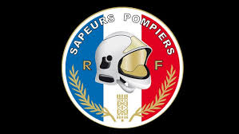
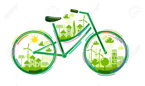
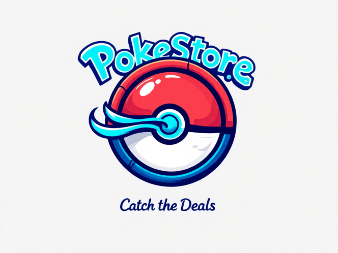
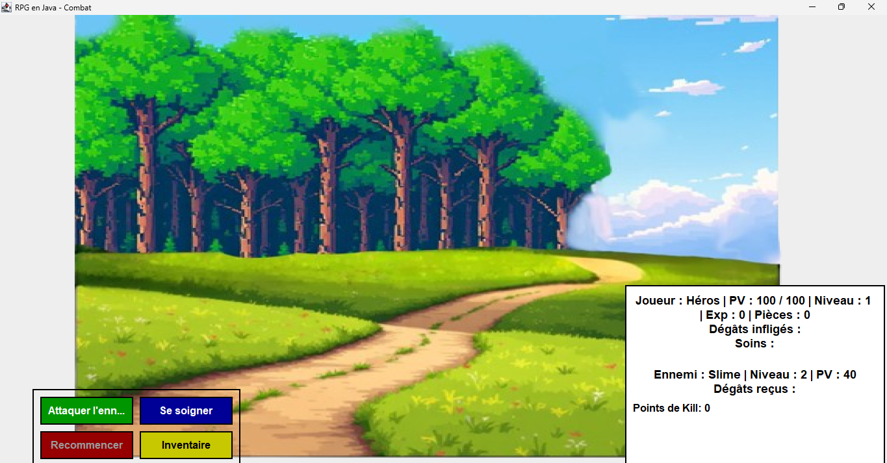
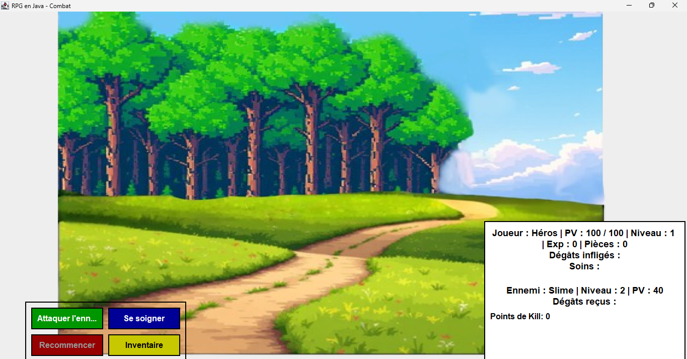

Mes Projets
Cas Pompier

Développement d’un site web en PHP / HTML / CSS / JavaScript dans un
contexte pédagogique.
Objectif : créer une interface permettant de gérer des types d'engins
(affichage, ajout, modification, suppression) avec ou sans image.
Fonctionnalités développées :
- Affichage des types d’engins sous forme de liste.
- Ajout de nouveaux types avec gestion d’image (stockage du chemin, pas du fichier en
base).
- Formulaire dynamique pour la création et l’édition.
- Boutons de suppression et de modification avec pré-remplissage des champs.
Projet CMS Wordpress : EcoMobilis

Projet réalisé en groupe durant la première année de BTS, utilisant
WordPress comme CMS.
Objectif : Développer un site web facilitant l’accès aux services de
vélos partagés dans différentes villes, dans une démarche écologique.
Fonctionnalités mises en œuvre :
- Recherche de stations de vélos par ville.
- Présentation de l’initiative EcoMobilis et de ses objectifs durables.
- Utilisation de thèmes personnalisés et de plugins adaptés.
- Répartition des tâches en groupe : design, contenu, structure du site, etc.
Portfolio
Projet personnel réalisé dans le but de candidater à une école spécialisée à
Montpellier.
Objectif : Créer un site web de présentation personnelle mettant en
valeur mes projets, notamment dans le domaine du développement de jeux vidéo.
Contenu du site :
- Présentation de mon parcours et de mes compétences techniques.
- Mise en avant de projets liés à la programmation de jeux (exemples, captures,
démos).
- Design clair et professionnel adapté à une candidature scolaire.
- Site développé en HTML / CSS / JavaScript / PHP.
Veille technologique : Informatique Quantique
Réalisation d’une veille technologique sur le thème de l’informatique
quantique, dans le cadre du BTS SIO.
Objectif : Suivre l’évolution d’un domaine émergent à fort impact futur
dans les technologies numériques.
Méthodologie :
- Utilisation d’outils comme Pocket et Feedly (via
Feedex) pour centraliser et organiser les sources d'information.
- Sélection d’articles récents, rapports de recherche et actualités technologiques.
- Synthèse des avancées (qubits, ordinateurs quantiques, enjeux de cybersécurité,
etc.).
- Présentation claire des apports et limites de cette technologie.
Cas Photoforyou
Projet de fin d’année développé en duo, simulant un site de vente de
photographies numériques.
Objectif : Concevoir une application web (non publique) pour la gestion
des utilisateurs, des photos et des ventes, dans un cadre pédagogique.
Stack technique : Laravel (PHP), base de données SQL,
Blade pour le front-end.
Fonctionnalités principales :
- Authentification des utilisateurs et rôles (admin/client).
- Ajout, modification et suppression de photos avec métadonnées.
- Interface d’administration pour la gestion du catalogue.
- Utilisation du framework Laravel pour structurer le projet (MVC, routage, migrations,
etc.).
Pokestore

Projet de fin d’année réalisé en trio, développé en Java avec
JavaFX, simulant une boutique spécialisée dans la vente de cartes Pokémon
et de produits dérivés.
Objectif : Concevoir une application locale combinant boutique et outil
pédagogique pour une entreprise fictive.
Fonctionnalités principales :
- Gestion du catalogue de produits (cartes, goodies).
- Interface utilisateur intuitive pour la consultation et l’achat.
- Module d’administration (gestion des stocks, des utilisateurs, des ventes).
- Système de questionnaires internes à destination des employés pour
évaluer leurs connaissances produits.
- Application développée avec JavaFX pour une expérience graphique fluide et
interactive.
Jeu multijoueur en Python

Projet réalisé en stage de première année, consistant en un jeu
multijoueur simple développé en Python.
Objectif : Créer une base de jeu en réseau avec peu de fonctionnalités
pour expérimenter la logique client/serveur.
Fonctionnalités développées :
- Connexion de plusieurs joueurs sur un réseau local.
- Déplacement de personnages sur un plateau basique.
- Gestion minimale des collisions ou interactions.
Ce projet met en évidence mes premiers pas en développement de jeux, en contraste avec
les projets plus avancés comme Pokestore.
Jeu RPG avec JavaFX
 

Projet personnel développé en Java avec JavaFX, servant à mettre en
pratique des compétences avancées en conception d’interface graphique et en logique de
jeu.
Objectif : Créer un jeu en mode RPG avec une progression dynamique et
une interface soignée.
Fonctionnalités principales :
- Système de vagues d’ennemis à affronter avec montée progressive en difficulté.
- Gain d’XP à chaque ennemi vaincu, avec possibilité
d’améliorations.
- Boutique intégrée pour acheter des objets ou compétences.
- Apparition automatique d’un boss après un certain nombre d’ennemis
éliminés.
- Utilisation de JavaFX pour les animations, la gestion des états de jeu, et une
interface fluide.
Ce projet illustre clairement ma montée en compétence depuis mes premières réalisations
en Python.